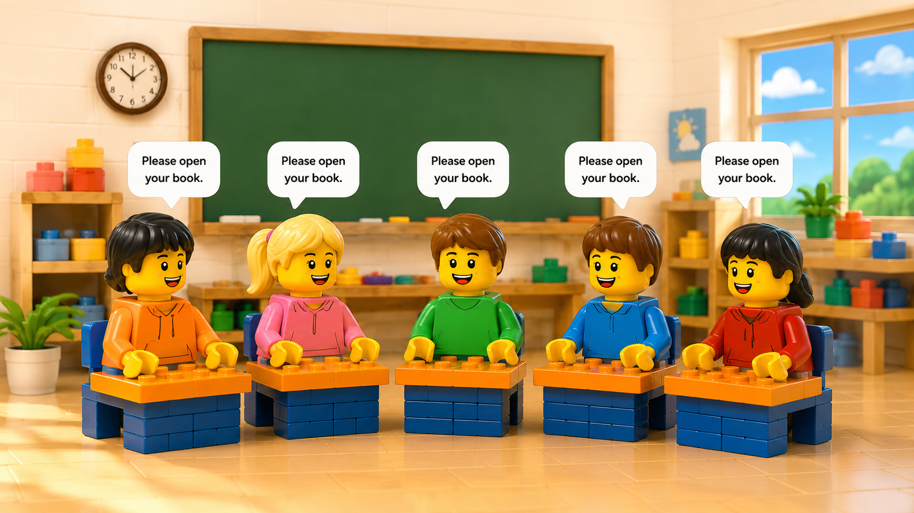
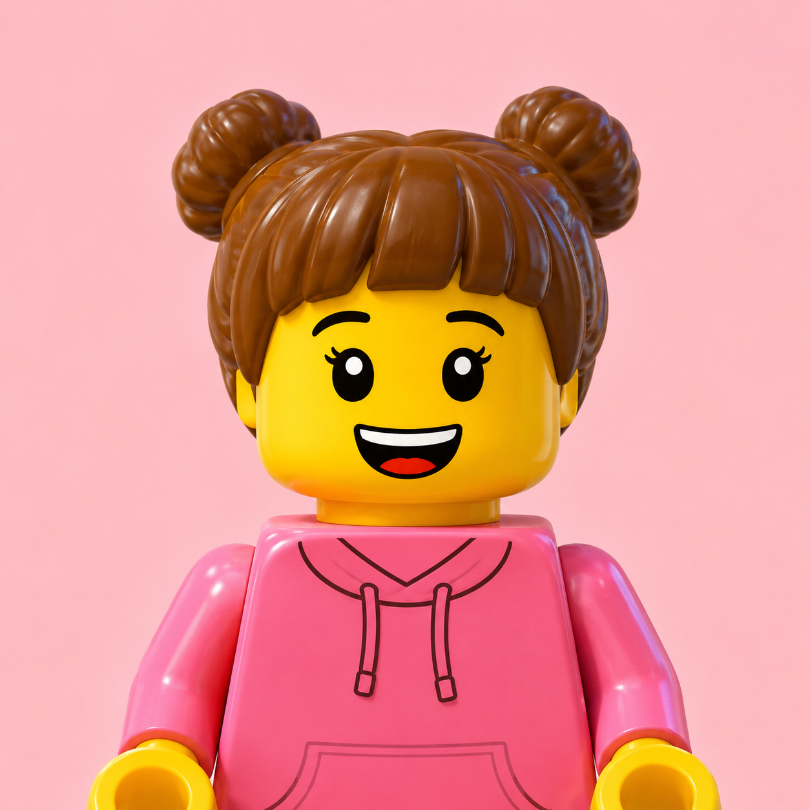
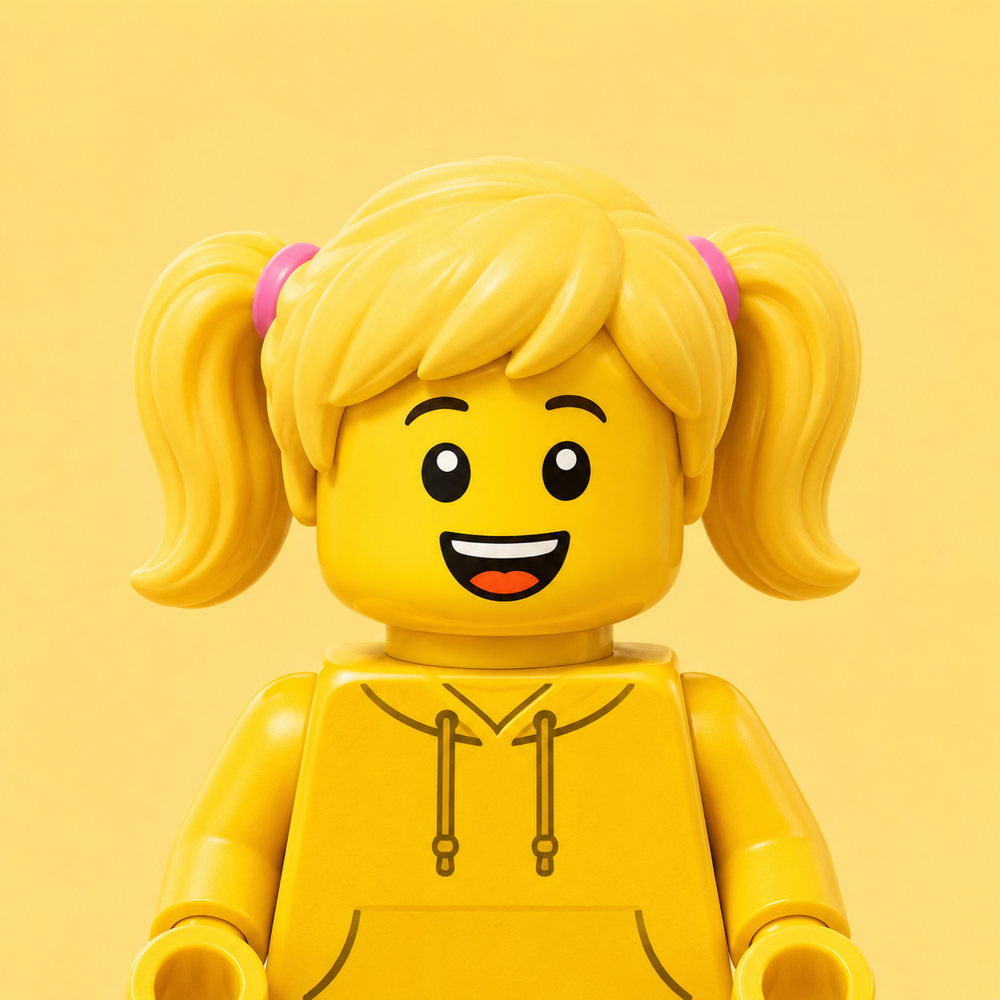

Avatar voice identity
Click to expand
01 The Problem
Child-avatar voices need to be perceptually distinct enough for student teachers to notice who is speaking and follow classroom interaction.
This thesis asks what makes synthetic child-like voices sound different from one another, and whether a controlled zero-shot voice conversion pipeline can help study that question.
Click to expand
Click to expand
Click to expand

Design guidance for VR
02 Our Solution
We create controlled synthetic child-like voices and examine which acoustic cues and perceptions support speaker differentiation.
Explore the Pipeline ↓ Scroll down to see how it works03 Demo
Enter a sentence, generate synthetic child-like voices, and listen to how different voices sound.

Child A
Child C04 Insights
This study helps identify which acoustic dimensions are most informative for speaker differentiation in children, and how synthetic speech can advance both research and applications.
Discover which acoustic features support child speaker differentiation.
Examine how children’s voices are perceived as same or different.
Check whether computational methods align with human perception.
Inform VR design and future child speech technology development.